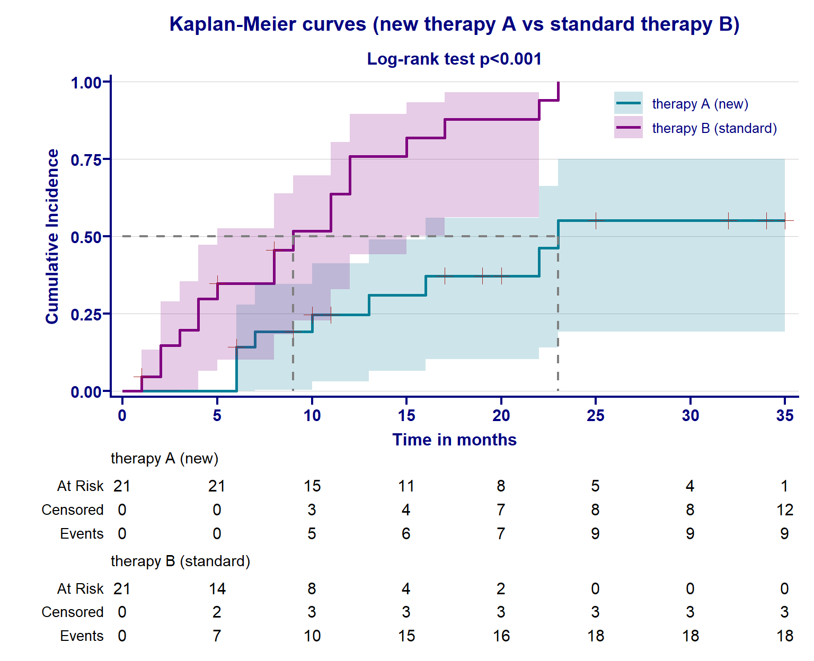

32 Survival analysis
The primary outcome in many clinical trials is the time from randomization, and start of the intervention to a well-defined critical event such as death, disease recurrence, occurrence of adverse events, or treatment failure. The survival analysis estimated by Kaplan–Meier approach is particularly useful when studying time-to-event data. It is a non-parametric method, which means that it does not make any assumptions about the underlying distribution of the data.
When we have finished this Chapter, we should be able to:
32.1 Research question
In a randomized controlled trial of a new therapy A with data patients with leukemia, we want to:
- find the survival time of patients receiving the new therapy A
- compare the survival curves of the patients receiving the new therapy A and patients receiving the standard therapy B for leukemia.
32.2 Packages we need
We need to load the following packages:
32.3 Preraring the data
In preparing Kaplan-Meier survival analysis that compares different treatments, three variables should be recorded for each patient: (a) the time that is the duration between the beginning of the treatment and the end-point (event of interest or censoring), (b) the status at the end of the survival time (event occurrence or censored data), and (c) the study group such as treatment versus control intervention.
We import the data “leukemia” in R:
library(readxl)
dat <- read_excel(here("data", "leukemia.xlsx"))The dataset has 42 observations (rows) and includes three variables (columns).
time: the survival or censoring time in months
status: indicator whether or not the patient died (1 indicates death and 0 indicates censored observation)
intervention: randomly assigned therapy group with two levels, A (new therapy) or B (standard therapy).
We inspect the data and the type of variables:
glimpse(dat)Rows: 42
Columns: 3
$ time <dbl> 6, 6, 6, 6, 7, 9, 10, 10, 11, 13, 16, 17, 19, 20, 22, 23,…
$ status <dbl> 0, 1, 1, 1, 1, 0, 0, 1, 0, 1, 1, 0, 0, 0, 1, 1, 0, 0, 0, …
$ intervention <chr> "therapy A (new)", "therapy A (new)", "therapy A (new)", …First, we obtain a subset of data with patients receiving the new therapy A.
dat.A <- dat |>
filter(intervention == "therapy A (new)")Next, we run the Surv() function that converts the data to a special format which allows to account for censored observations. The arguments we need to define are the time and the health status of the patients. The times (in months) for the patients receiving the new therapy A follow:
Surv(dat.A$time, dat.A$status) [1] 6+ 6 6 6 7 9+ 10+ 10 11+ 13 16 17+ 19+ 20+ 22 23 25+ 32+ 32+
[20] 34+ 35+NOTE: Censoring times are marked with + symbol. The above data show that patients in the new therapy were censored on months 6+, 9+, 10+, 11+, 17+, 19+, 20+, 32+, 32+, 34+, 35+.
32.4 The Kaplan–Meier Product Limit Estimator
Kaplan-Meier estimator, also known as product-limit estimator, can be used to measure the cumulative probability of “surviving” for a certain amount of time after starting the therapy.
Basic concepts
Let \(T\) be a non-negative random variable, representing the time until the event of interest (death). Additionally, suppose that the events (deaths) are observed in the period of follow-up at \(k\) distinct times \(t_{1} < t_{2} < t_{3} < \ ...\ < t_{k}\). The conditional survival probability at \(t_j\) is defined as the probability of surviving beyond time \(t_j\) (\(T>t_j\)), given that the patient has survived at least \(t_j\) time (\(T≥t_j\)). This conditional probability represents the proportion of patients who are at risk at time \(t_j\) but who do not die at this time point, as follows:
\[P(T > t_j\ |\ T≥t_{j}) = \frac{r_{j}-d_{j}}{r_{j}}\ = 1-\frac{d_{j}}{r_{j}} , \ \ \ for\ j=1,2,..,k. \tag{32.1}\]
where
\(t_{j}\) is the time when at least one event (i.e., death) happened
\(r_j\) is the number of patients at risk (i.e., the number of patients alive) just before the time \(t_j\)
\(d_j\) the number of events (i.e., deaths) that happened at time \(t_j\)
The Kaplan–Meier estimator for the survival function is defined as the cumulative product of the conditional survival probabilities:
\[ S(t) = P(T>t) = \prod_{j:t_j≤t}(1-\frac{d_{j}}{r_{j}}) \tag{32.2}\]
Therefore, the cumulative probability of surviving beyond \(t_j\) is given by:
\[ S(t_{j}) = (1-\frac{d_{j}}{r_{j}}) \times (1-\frac{d_{j-1}}{r_{j-1}}) \times \ ... \times\ (1-\frac{d_{2}}{r_{2}}) \times (1-\frac{d_{1}}{r_{1}}) \tag{32.3}\]
This implies that:
\[ S(t_{j}) = (1-\frac{d_{j}}{r_{j}}) \times S(t_{j-1}) \tag{32.4}\]
K-M analysis for the group of patients in new therapy A
The first step in Kaplan-Meier analysis usually involves the construction of a table with pertinent information, so we call the survfit2() function that models the survival probability
by fitting the “survival” data of new therapy A to a constant (since there is only one group).
# create an object with the K-M estimates for the patients in the new therapy A
km.A <- survfit2(Surv(time, status) ~ 1, data = dat.A)
names(km.A) [1] "n" "time" "n.risk" "n.event" "n.censor"
[6] "surv" "std.err" "cumhaz" "std.chaz" "type"
[11] "logse" "conf.int" "conf.type" "lower" "upper"
[16] "call" ".Environment"The object km.A includes the number of participants at risk (n.risk), censored (n.censor) and having experienced an event (n.event) as well as the cumulative probability of surviving over time (surv) for the new therapy, among others.
Next, we estimate in R the conditional probability of surviving over time using the Equation 32.1:
# compute the probability of "surviving" over time
prob.A <- round(1-(km.A$n.event/km.A$n.risk), 3)
prob.A [1] 0.857 0.941 1.000 0.933 1.000 0.917 0.909 1.000 1.000 1.000 0.857 0.833
[13] 1.000 1.000 1.000 1.000
Now, we are ready to include all the information in one table (Table 32.1) as follows:
# create a dataframe with all the "survival" variables of interest
tb.A <- data.frame(time = km.A$time, n.risk = km.A$n.risk,
n.event = km.A$n.event, n.censor = km.A$n.censor,
prob.A, surv.A = round(km.A$surv, 3))
# create the table
tb.A |>
gt() |>
cols_label(
time = html("Ordered times (months), t"),
n.risk = html("No. at risk"),
n.event = html("No. of deaths"),
n.censor = html("No. censored"),
prob.A = html("Conditional probability of surviving, P(t)"),
surv.A = html("Cumulative probability of surviving, S(t)")) |>
tab_options(column_labels.font.weight = "bold") |>
cols_align(align = "center") |>
gt_highlight_rows(rows = 3, fill = "lightgrey",
bold_target_only = TRUE,
target_col = c(n.risk, n.censor)) |>
tab_style(style = list(cell_text(weight = "bold")),
locations = cells_body(columns = n.risk, rows = n.risk == 15))| Ordered times (months), t | No. at risk | No. of deaths | No. censored | Conditional probability of surviving, P(t) | Cumulative probability of surviving, S(t) |
|---|---|---|---|---|---|
| 6 | 21 | 3 | 1 | 0.857 | 0.857 |
| 7 | 17 | 1 | 0 | 0.941 | 0.807 |
| 9 | 16 | 0 | 1 | 1.000 | 0.807 |
| 10 | 15 | 1 | 1 | 0.933 | 0.753 |
| 11 | 13 | 0 | 1 | 1.000 | 0.753 |
| 13 | 12 | 1 | 0 | 0.917 | 0.690 |
| 16 | 11 | 1 | 0 | 0.909 | 0.627 |
| 17 | 10 | 0 | 1 | 1.000 | 0.627 |
| 19 | 9 | 0 | 1 | 1.000 | 0.627 |
| 20 | 8 | 0 | 1 | 1.000 | 0.627 |
| 22 | 7 | 1 | 0 | 0.857 | 0.538 |
| 23 | 6 | 1 | 0 | 0.833 | 0.448 |
| 25 | 5 | 0 | 1 | 1.000 | 0.448 |
| 32 | 4 | 0 | 2 | 1.000 | 0.448 |
| 34 | 2 | 0 | 1 | 1.000 | 0.448 |
| 35 | 1 | 0 | 1 | 1.000 | 0.448 |
When there are only censored observations at a particular time such as at month 9, the conditional probability \(P(t)\) of surviving equals to 1 and the cumulative probability \(S(t)\) does not changed. However, we observe that at the next time t = 10 months, the number of patients “at risk” is reduced by the number of censored data at t = 9 months (16 - 1 = 15).
Censoring removes the subject from the denominator, i.e., patients at risk.
To calculate the conditional survival probability \(P(t)\), we consider the numerator as the difference between the number of patients at risk and the number of patients who died and at the denominator the number of patients at risk at the beginning of the period. For the first two periods, we have:
0-6 In this study 21 patients were at risk at therapy A. All patients were alive; the proportion surviving on this day and the cumulative survival (i.e. proportion of all cases that were still alive at this day) were both 1.
We can see that at day 0, there are 61 patients in the combination therapy group at risk and one patient have been censored. If there are not relapses the \(S(t_{0}) = S(0) = 1\).
At day 1 there are 60 patients at risk and one patient have been censored. If there are not relapses the \(S(t_{0}) = S(0) = 1\).
\(S(t_{}) = S(t_{4}) \times P(t_{5}) = 0.916 \times 0.962 = 0.881\)
We observe that at day 1, the curve drops 16% of the remaining height (instead of 10% at the start of the study), because less people are at risk:
For example, in the combination therapy group, the cumulative probability of a patient to be relapse-free 5 days \(S(t_{5})\), is the cumulative probability of being relapse-free the first 4 days \(S(t_{4}) = 0.916\) multiplied by the probability of being relapse-free the interval between 4 and 5 days \(P(t_{5}) = 0.962\):
\(S(t_{5}) = S(t_{4}) \times P(t_{5}) = 0.916 \times 0.962 = 0.881\)
We can see that at day 1, there are 61 patients in the combination therapy group at risk and one patient have been censored. We observe that at day 1, the curve drops 16% of the remaining height (instead of 10% at the start of the study), because less people are at risk:
The Kaplan–Meier curve
Kaplan-Meier analysis can be presented as a survival curve in addition to tabular form.
Kaplan–Meier curves are widely used for the visual representation of survival function (estimated by Kaplan–Meier estimator).
The table presents at each time \(t_j\) in which an event occurred, the total number of patients at risk (\(r_j\)) just before the \(t_j\), the number of events at that time (\(d_j\)), the conditional probability and the cumulative probability of surviving with 95% confidence interval (lower 95% CI, upper 95% CI).
tb.km.A <- data.frame(tb.A, LCL = round(km.A$lower, 3), UCL = round(km.A$upper, 3))
tb.km.A |>
select(-n.censor) |>
filter(prob.A != 1) |>
mutate(j = row_number()) |>
relocate(j) |>
gt() |>
cols_label(
time = html("Survival times (months), t<sub>j</sub>"),
n.risk = html("No. at risk, r<sub>j</sup>"),
n.event = html("No. of deaths, d<sub>j</sup>"),
prob.A = html("Conditional probability of surviving, P(t<sub>j</sub>)"),
surv.A = html("Cumulative probability of surviving, S(t<sub>j</sub>)"),
LCL = html("lower 95% CI"),
UCL = html("upper 95% CI")) |>
tab_options(column_labels.font.weight = "bold") |>
cols_align(align = "center") | j | Survival times (months), tj | No. at risk, rj | No. of deaths, dj | Conditional probability of surviving, P(tj) | Cumulative probability of surviving, S(tj) | lower 95% CI | upper 95% CI |
|---|---|---|---|---|---|---|---|
| 1 | 6 | 21 | 3 | 0.857 | 0.857 | 0.720 | 1.000 |
| 2 | 7 | 17 | 1 | 0.941 | 0.807 | 0.653 | 0.996 |
| 3 | 10 | 15 | 1 | 0.933 | 0.753 | 0.586 | 0.968 |
| 4 | 13 | 12 | 1 | 0.917 | 0.690 | 0.510 | 0.935 |
| 5 | 16 | 11 | 1 | 0.909 | 0.627 | 0.439 | 0.896 |
| 6 | 22 | 7 | 1 | 0.857 | 0.538 | 0.337 | 0.858 |
| 7 | 23 | 6 | 1 | 0.833 | 0.448 | 0.249 | 0.807 |
Survival Probability Calculation: The survival probability is calculated at each time interval. It represents the proportion of subjects who have not experienced the event up to that point in time. The initial survival probability is 1 (i.e., all subjects are event-free at the start).
Cumulative Survival Probability:
the proportion of patients free from tobacco up to \(j\) point in time is \(S(t_{j-1})\) is multiplied to obtain the cumulative survival probability.
The “survival” probability \(S(t_{j})\) at each time interval is multiplied to obtain the
time is plotted on the x-axis and the survival function is plotted on the y-axis.
The K-M plot of the estimated cumulative probability of surviving with 95% confidence interval (lower 95% CI, upper 95% CI) is depicted in Figure 32.2.
km.A |>
ggsurvfit(linewidth = 1, color = "#077E97" ) +
theme_prism(palette = "winter_bright", base_size = 12) +
add_confidence_interval(fill = "#077E97") +
add_censor_mark(color = "brown", size = 3.5) +
add_risktable(risktable_stats = c("n.risk", "cum.censor", "cum.event")) +
add_quantile(y_value = 0.5, color = "gray50", linewidth = 0.75) +
scale_x_continuous(expand = c(0.018, 0, 0.02, 0),
limits = c(0, 35), breaks = seq(0, 35, 5)) +
scale_y_continuous(expand = c(0.018, 0, 0.05, 0)) +
scale_colour_prism() +
labs(title = "Kaplan-Meier curve for the new therapy A",
x = "Time in months",
y = "Cumulative Survival Probability") +
theme(panel.grid.major.y = element_line(linewidth = 0.02, color = "grey80"))In Figure 32.2, These intervals are typically represented on the x-axis of the chart.
The lengths of the horizontal lines along the X-axis of serial times represent the survival duration for that interval.
The K-M curve is stepped over time because the estimate changes only at times when an event has occurred. At time \(t_{0} = 0\), all patients are at risk and hence, the cumulative probability of surviving is \(S(t_{0}) = S(0) = 1\). Note that the survival curve is defined only up to 35 weeks, the largest of the observation times.
Censoring times are marked on the K-M plot as + symbols.
In figure 1, the vertical axis runs from 0 to 1 and the horizontal from 0 to 12 years post randomisation (though this was not the longest follow- up available). The Kaplan–Meier estimate for the control arm is depicted by a red-dashed line and for the research arm by a solid blue line. The ‘curves’ are stepped over time because the estimate changes only at times when an event has occurred. These steps become more pronounced over time as more participants are censored. Beneath the horizontal axis is a table that reports the number of participants still ‘at-risk’ at specific time points (here 0, 2, 4, 6, 8, 10 and 12 years), that is, they are still in follow-up at this time point, not having had an event or been censored. In figure 1, after 10 years, there remain 71 and 99 participants at risk of an event in the control and research arms, respectively.
If we want to find the median time of surviving for patients in the new therapy A, we have to call the km.A survival object:
km.ACall: survfit(formula = Surv(time, status) ~ 1, data = dat.A)
n events median 0.95LCL 0.95UCL
[1,] 21 9 23 16 NAWe observe that the median time equals to 23 for this group of patients.
32.5 Comparing survival curves
###KM curves and log-rank test for Transfusion group
#plot by Transfusion group
km.AB <- survfit2(Surv(time, status) ~ intervention, data = dat)
# to find which month corresponds to median survival run:
km.ABCall: survfit(formula = Surv(time, status) ~ intervention, data = dat)
n events median 0.95LCL 0.95UCL
intervention=therapy A (new) 21 9 23 16 NA
intervention=therapy B (standard) 21 18 9 5 15#Run log-Rank test to compare the curves for the Transfusion groups
survdiff(Surv(time, status) ~ intervention, data = dat, rho = 0)Call:
survdiff(formula = Surv(time, status) ~ intervention, data = dat,
rho = 0)
N Observed Expected (O-E)^2/E (O-E)^2/V
intervention=therapy A (new) 21 9 17.65 4.24 13.3
intervention=therapy B (standard) 21 18 9.35 8.00 13.3
Chisq= 13.3 on 1 degrees of freedom, p= 3e-04 km.AB |>
ggsurvfit(linewidth = 1) +
theme_prism(palette = "winter_bright", base_size = 12) +
add_confidence_interval() +
add_censor_mark(color = "brown", size = 3.5) +
add_risktable(risktable_stats = c("n.risk", "cum.censor", "cum.event"), size = 4) +
add_quantile(y_value = 0.5, color = "gray50", linewidth = 0.75) +
scale_x_continuous(expand = c(0.018, 0, 0.02, 0), limits = c(0, 35), breaks = seq(0, 35, 5)) +
scale_y_continuous(expand = c(0.018, 0, 0.05, 0)) +
scale_color_manual(values = c("#077E97", "#800080")) +
scale_fill_manual(values = c("#077E97", "#800080")) +
labs(title = "Kaplan-Meier curves (new therapy A vs standard therapy B)",
subtitle = glue::glue("Log-rank test {survfit2_p(km.AB)}"),
x = "Time in months",
y = "Cumulative Survival Probability") +
theme(panel.grid.major.y = element_line(linewidth = 0.02, color = "grey80"),
legend.position = c(0.85, 0.89))km.AB |>
ggsurvfit(type = "risk", linewidth = 1) +
theme_prism(palette = "winter_bright", base_size = 12) +
add_confidence_interval() +
add_censor_mark(color = "brown", size = 3.5) +
add_risktable(risktable_stats = c("n.risk", "cum.censor", "cum.event"), size = 4) +
add_quantile(y_value = 0.5, color = "gray50", linewidth = 0.75) +
scale_x_continuous(expand = c(0.018, 0, 0.02, 0), limits = c(0, 35),
breaks = seq(0, 35, 5)) +
scale_y_continuous(expand = c(0, 0.018, 0.02, 0)) +
scale_color_manual(values = c("#077E97", "#800080")) +
scale_fill_manual(values = c("#077E97", "#800080")) +
labs(title = "Kaplan-Meier curves (new therapy A vs standard therapy B)",
subtitle = glue::glue("Log-rank test {survfit2_p(km.AB)}"),
x = "Time in months",
y = "Cumulative Survival Probability") +
theme(panel.grid.major.y = element_line(linewidth = 0.02, color = "grey80"),
legend.position = c(0.85, 0.89))
Here’s how the Kaplan-Meier chart works:
Data Collection: Data is collected for a group of subjects who are followed over a specific time period. For example, in a clinical trial, patients may be monitored for the occurrence of a particular event or outcome.
Time Intervals: The time period is divided into discrete intervals, such as days, months, or years. These intervals are typically represented on the x-axis of the chart.
Event Status: For each subject, their event status is noted at each time interval. The event status can be coded as 1 if the event of interest occurred (e.g., death) or 0 if the event did not occur (e.g., still alive).
We display the results and draw the Kaplan-Meier plot:
On the Kaplan–Meier curve of the small crosses correspond to censored data.
In our case, the time period is divided into discrete intervals, such as days, months, or years. These intervals are typically represented on the x-axis of the chart.
Cumulative Survival Probability: The survival probabilities at each time interval are multiplied to obtain the cumulative survival probability. This cumul